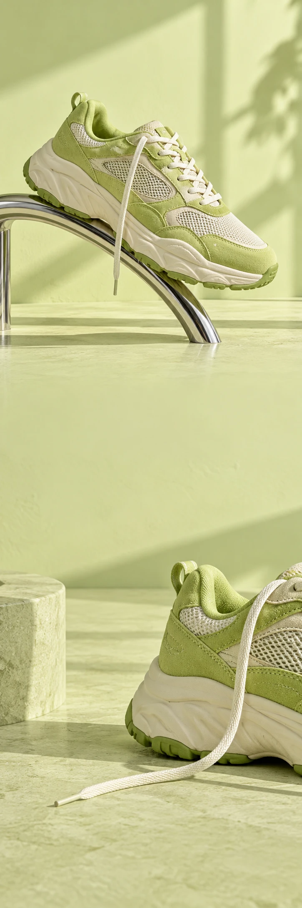

ARCADE RUN
SneakersCollectiedrop
ARCADE RUN / THE EVERYDAY ROUTE
GA MAAR.
ZIE MAAR.
Bekijk de sneakers ARCADE RUN / VAN DICHTBIJ
Van eerste stap
tot laatste omweg.
Een frisse kleur. Een uitgesproken lijn. En ineens heb je weer zin om te lopen. Maak van je dagelijkse route iets van jezelf.
01Suède
02Mesh
03Eigen route
GEEN PLAN.
WEL EEN RICHTING.
De stad is groot genoeg voor een extra rondje.
Bekijk de sneakers